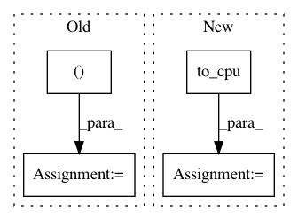

501e50debbf0314e043b1cfd4bd6cba02f897015,examples/ssd/demo.py,,main,#,12
Before Change
img = utils.read_image(args.image, color=True)
bboxes, labels, scores = model.predict(img[np.newaxis])
bbox, label, score = bboxes[0], labels[0], scores[0]
vis_bbox(
img, bbox, label, score, label_names=voc_detection_label_names)
plot.show()
After Change
img = utils.read_image(args.image, color=True)
bboxes, labels, scores = model.predict(img[np.newaxis])
bbox = cuda.to_cpu(bboxes[0])
label = cuda.to_cpu(labels[0])
score = cuda.to_cpu(scores[0])
vis_bbox(
In pattern: SUPERPATTERN
Frequency: 3
Non-data size: 4
Instances
Project Name: chainer/chainercv
Commit Name: 501e50debbf0314e043b1cfd4bd6cba02f897015
Time: 2017-05-22
Author: Hakuyume@users.noreply.github.com
File Name: examples/ssd/demo.py
Class Name:
Method Name: main
Project Name: chainer/chainercv
Commit Name: d37d08d9b2a806b3345fba41711c0d517b92a65c
Time: 2017-06-15
Author: yuyuniitani@gmail.com
File Name: chainercv/links/model/vgg/vgg16.py
Class Name: VGG16Layers
Method Name: predict
Project Name: chainer/chainercv
Commit Name: 1d8df858d4fcaf22de3de7babbab0d9b9d0858ae
Time: 2018-10-11
Author: Hakuyume@users.noreply.github.com
File Name: chainercv/links/model/ssd/multibox_loss.py
Class Name:
Method Name: multibox_loss